ANIMATED GRAPH QUOTO DOCUMENT
My Name Is Muhammad Hassan Shahzad .I Compared The Data Between Pakistan And Romania. The Idea For This Project Is That I Can Check Data Of Two Developing Countries. As I Want To Check why Pakistan Is less developed than Romania:-
ROMANIA HISTORY:-
Romania Is The Country Of Eastern Europe .It Is The Situated In The West Coast Of Black Sea.The Land Has A Total Area Of 238,400 Km^2.This Land Area Is Approximately 59% Of The Area Of California. Romania Is The Largest Country In Europe .And 83 Biggest Country In World .Its Capital Is Bucharest .It Got Independence . The Formation Of The Modern Romanian State Took Place In 1859 When The Danubian Principalities Of Moldavia And Wallachia Were United Through A Personal Union. The Newly Established State, Officially Known As Romania Since 1866, Achieved Independence From The Ottoman Empire In 1877. In World War I, Romania Initially Declared Its Neutrality In 1914 But Later Joined Allied Powers.
PAKISTAN HISTORY:-
Pakistan came into being on 1947.Pakistan’s Economic History Has Been Marked By A Series Of Transitions And Challenges Since Gaining Independence In 1947. In Its Early Years, The Economy Was Primarily Agrarian, But Efforts To Industrialize Began In The 1950s. Foreign Aid Played A Crucial Role In Supporting Initial Development Efforts. However, Economic Policies Oscillated Between State-Led And Market-Oriented Approaches. The 1980s Witnessed A Shift Towards Economic Liberalization, Yet Recurring Periods Of Economic Instability, Including Debt Crises, Persisted. In Recent Decades, Pakistan Has Grappled With Issues Such As Inflation, Fiscal Deficits, And External Debt. The Country Has Sought Assistance From International Financial Institutions, Notably The International Monetary Fund (IMF), To Address Economic Challenges And Implement Reforms. While Sectors Like Agriculture And Textiles Remain Vital, There’s A Growing Focus On Diversification And Infrastructure Development, With Initiatives Like The China-Pakistan Economic Corridor (CPEC) Aiming To Boost Economic Growth. Political Instability, Corruption, And Security Concerns Have At Times Hindered Sustained Economic Progress. The Intricate Interplay Between Economic Policies, Political Dynamics, And Regional Factors Continues To Shape Pakistan’s Economic Trajectory As It Strives For Sustainable Development In A Rapidly Changing Global Landscape.
GRAPHS MAKING LIBRARIES I USED:-
I Will Done My Graph Is R Stdio Using R Language. In R Language I Used Many Libraries:-
readxl
ggplot2
gganimate
ggthemes
dplyr
By Using These Libraries I Make MY Graphs With Animation.GREEN LINE REPREST PAKISTAN GDP ANNUALLY VS RED REPRESENT ROMANIA.
CODE:-
gdp_R<-conciseromaniadata$`ROU GDP growth (annual %)`
gdp_R<-as.integer(gdp_R)
gdp_P<-conciseromaniadata$`PAK GDP growth (annual %)`
gdp_P<-as.integer(gdp_P)
ggplot()+
geom_point(conciseromaniadata,mapping=aes(x=year,y=gdp_R,group=1),color="purple",size=3)+
geom_line(conciseromaniadata,mapping=aes(x=year,y=gdp_R,group=1),color="red",size=1)+
geom_point(conciseromaniadata,mapping=aes(x=year,y=gdp_P,group=2),color="blue",size=3)+
geom_line(conciseromaniadata,mapping=aes(x=year,y=gdp_P,group=2),color="green",size=1)+
scale_color_manual(values=c("PAKISTAN"="GREEN","ROMANIA"="RED"))+
theme_minimal()+
theme(legend.position="bottom",panel.background = element_rect(fill="white"))+
labs(title = "PAKISATN AND ROMANIA GDP(ANNUALLY)",x="YEAR",y="PAKISTAN GREEN AND ROMANIA RED")+
transition_reveal(year)PAKISTAN VS ROMANIA GDP ANNUALLY:
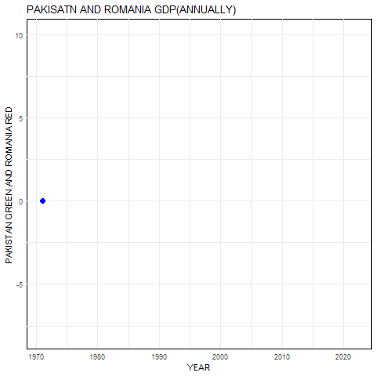
COMPARSION BETWEEN PAKISTAN AND ROMANIA GDP
Comparing The GDP Trajectories Of Pakistan And Romania From 1970 To 2020 Reveals Distinctive Economic Journeys For Both Nations. In The Early 1970s, Pakistan’s Economy Was Characterized By A Mix Of Agricultural And Industrial Sectors, While Romania, Under A Communist Regime, Had A Centralized, State-Controlled Economy. Over The Following Decades, Pakistan Experienced Periods Of Economic Reforms, Political Instability, And Challenges, Impacting Its GDP Growth. In Contrast, Romania Went Through Significant Changes With The Fall Of Communism In 1989, Embracing Market-Oriented Reforms And Transitioning To A Market Economy.
Throughout The 1980s And 1990s, Pakistan Faced Economic Fluctuations Due To Factors Like Political Instability, Foreign Debt, And Global Economic Conditions. Meanwhile, Romania’s Economy Underwent A Transformative Process With The Aim Of Aligning Itself With European Standards. The Early 2000s Saw Pakistan Implementing Economic Reforms, But Political Uncertainty Persisted. Romania, On The Other Hand, Was On A Path Toward European Union Accession, Which Occurred In 2007, Catalyzing Further Economic Reforms And Growth.
In The Aftermath Of The Global Financial Crisis In 2008, Both Countries Experienced Economic Challenges, But Their Responses Differed. Romania Implemented Austerity Measures, While Pakistan Sought Financial Assistance From International Organizations. By 2020, Romania Had Established Itself As An Emerging Market With A Diversified Economy, While Pakistan Continued To Grapple With Issues Such As Fiscal Deficits, Inflation, And Security Concerns.
PAKISTAN GDP IS OVERALL HIGHEST IN 1978-1980 Due TO INDUSTRIAL AND AGRICULTURAL REVOLUTION.
ROMANIA GDP IS OVERALL HIGHEST IN 2005_2008 DUE TO EUROPE UNION JOINING ,USING OF ADVANCED TECHNOLOGY AND EXPORT.
PAKISTAN AND ROMANIA BOTH GDP WAS DOWNFALL IN 2019_2020 DUE TO COVID-19.
PAKISTAN VS ROMANIA GDP REAL:-
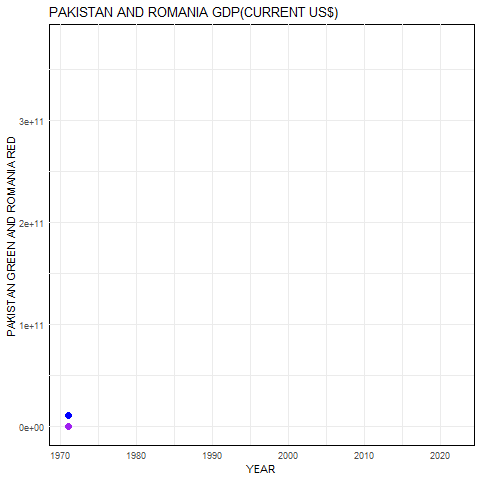
AS THE GDP REAL IS INCRESING.BUT ROMANIA GDP DOWNFALL START IN 2010 DUE TO GLOBAL ECONOMIC PROBLEMS AS IT DOES NOT INFLUENCE BUT IT EFFECT EXPORT MAJORILY.
PAKISTAN VS ROMANIA INFLATION GDP DEFLACTOR:-
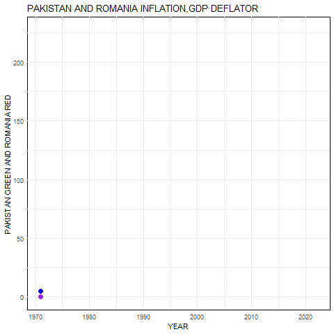
Pakistan Inflation Is Increasing And Decreasing So There Is Fluctuation In Other Hand Romania Inflation Is In Lower Than Pakistan But Later Own In 2010 It Is Increased,
While Romania Inflation Increased MoreIn 1990-2000. Due To End of Communist Era.
PAKISTAN VS ROMANIA IMPORT ANNUALLY:-
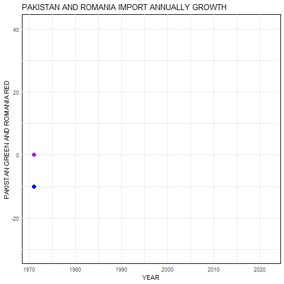
Pakistan Has A Higher Import Volume Compared To Romania, This Could Be A Contributing Factor To The Similarities In Their Inflation Rates.
Pakistan’s Higher Import Dependency May Lead To Increased Vulnerability To Global Economic Fluctuations, Exchange Rate Movements, And International Commodity Price Changes. If Pakistan Relies Significantly On Imported Goods And Commodities, Any Surge In Global Prices Or Depreciation Of The Local Currency Can Directly Impact The Domestic Cost Of Living. Additionally, Disruptions In Global Supply Chains Or Geopolitical Events Affecting Key Imports May Contribute To Inflationary Pressures.
It’s Crucial To Consider Other Factors As Well, Including Domestic Monetary Policies, Fiscal Measures, And Global Economic Conditions. Central Banks In Both Countries Play A Crucial Role In Managing Inflation Through Interest Rate Adjustments And Other Monetary Tools.
In Conclusion, While The Import-Export Dynamics And Inflation Rates Between Pakistan And Romania May Be Correlated, A Comprehensive Analysis Would Require An Examination Of Various Economic Indicators, Trade Patterns, And Policy Frameworks In Both Countries.
PAKISTAN VS ROMANIA IMPORT CURRENT US $:-
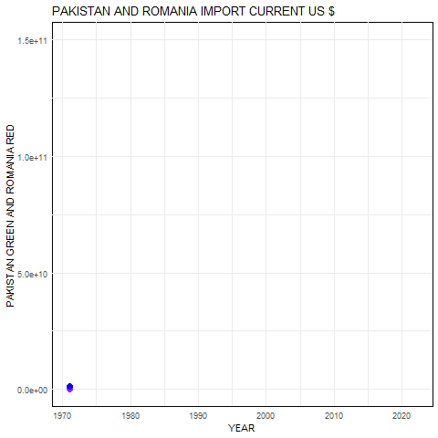
AS The Graph Shows Pakistan And Romania Both Import Are Totally Same .But After 2007 Import Start Moving Fastly And Then 2010 In Come To Downfall .But Then Country Start More And More Technological Imports.
PAKISTAN VS ROMANIA IMPORT PERCENTAGE OF GDP:-
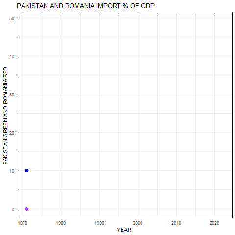
The Import Percentage Of GDP, Also Known As The Import-To-Gdp Ratio, Is A Financial Metric That Expresses The Value Of A Country’s Total Imports As A Percentage Of Its Gross Domestic Product (Gdp).
As Pakistan GDP % Of Import Is Greater Than Romania Till 1990. But After 1990 Romania Import % Of GDP Is Higher And Have Peak Value Than Pakistan.
PAKISTAN VS ROMANIA EXPORT ANUALLY:-
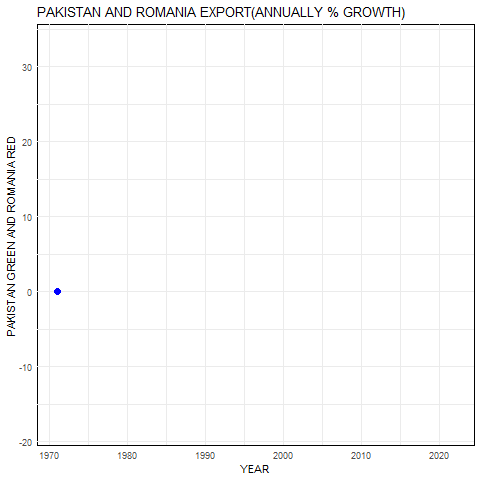
As Pakistan Has More Export Than Romania Till 1995.But Downfall In Pakistan Also Occurs Due To Natural Event Such As Hunger,No Raining Etc. As From Start Pakistan Due To Separation Of Bangladesh.It Decreased Than We Start Exporting.Small Hurdles Coming In Pakistan Export. But Romania Export Start After 1990 Than Increased And Then Decreased In 2010 As Described Below.
PAKISTAN VS ROMANIA EXPORT % OF GDP:-
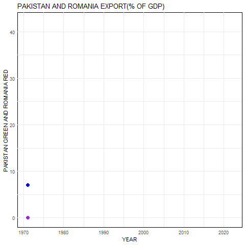
The 1990s Marked A Period Of Significant Economic And Political Transition For Romania, As It Moved From A Centrally Planned Economy Under Communism To A Market-Oriented System. The Post-Communist Era Brought About Various Reforms, Including Economic Restructuring, Privatization, And Efforts To Integrate Into The Global Economy. PAKISTAN EXPORT PER GDP %IS LESS THAN ROMANIA,SO ROMANIA CONTRIBUTE THE MOST IN GDP OF ROMANIA AS COMPARED TO PAKISTAN.
PAKISTAN VS ROMANIA EXPORT US $:-
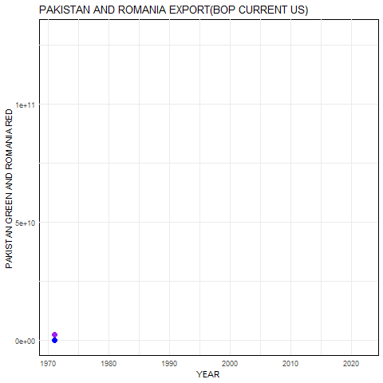
The Balance Of Payments (BOP) Is A Comprehensive Record Of A Country’s Economic Transactions With The Rest Of The World.
If Pakistan Exports More Goods And Services To Romania Than It Imports From Romania, It Contributes To A Positive Balance In The Trade Of Goods And Services, Which Is Favorable For Pakistan In The Balance Of Payments.
AS PAKISTAN EXPORT IS LESSER THAN ROMANIA FROM START TILL NOW DUE TO HUGE DEPT REPAYMENT.
PAKISTAN VS ROMANIA TRADE:-
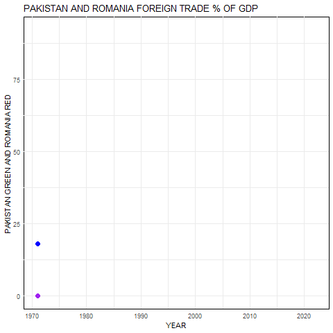
AccordingTo Pakistan And Romania Data .Pakistan Has Less Trade That Help In GDP Than Romania .Romania Export Become Lesser In 2010 Due To Global Crisis.Thus Overall Trade Of Romania Is Higher Than Pakistan In Term Of GDP.
PAKISTAN VS ROMANIA INTEREST RATE REAL AND LENDING:-
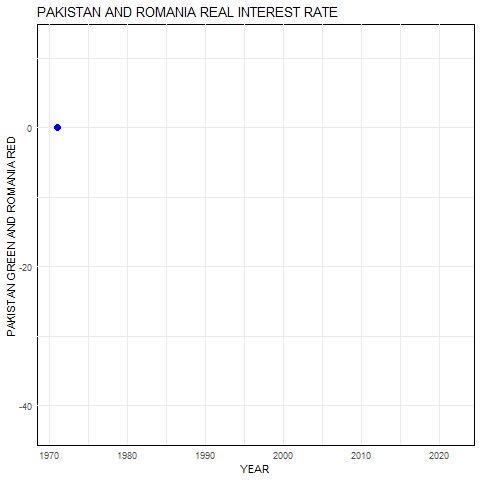
REAL INTEREST RATEThis Is The Stated Interest Rate On A Financial Product, Such As A Loan Or Investment .As Pakistan Interest Rate From Start Is Not Too Much Increasing Or Decreasing So In It Is Same But Romania Interest Rate Increases And Decrease Many Time After 1990.
LENDING INTEREST RATE:-
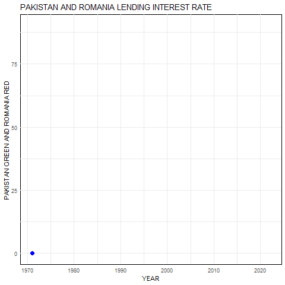
Lending Interest Rates In Pakistan And Romania Are Influenced By A Variety Of Factors, Including Economic Conditions, Inflation Rates, Monetary Policy Decisions, And The Overall Financial Health Of The Countries. Central Banks Play A Crucial Role In Setting Benchmark Interest Rates That, In Turn, Influence Lending Rates Across The Financial System.
Historically, Pakistan Has Experienced Periods Of Both Higher And Lower Interest Rates, Reflecting Efforts To Control Inflation And Stabilize The Economy.
In Romania, The National Bank Of Romania (BNR) Is The Central Bank That Shapes Monetary Policy. Similar To Pakistan, Lending Interest Rates In Romania Are Influenced By Inflation, Economic Performance, And The Broader Financial Landscape. Romania, Being A Member Of The European Union, Is Also Affected By The Monetary Policies Set By The European Central Bank (ECB).
Comparing Lending Interest Rates Between Pakistan And Romania Would Require Examining The Current Economic Conditions And The Specific Policy Decisions Taken By Their Respective Central Banks. It’s Important To Note That Interest Rates Can Fluctuate Over Time Based On Economic Developments And Policy Adjustments.
DEPOSIT INTEREST RATE:-
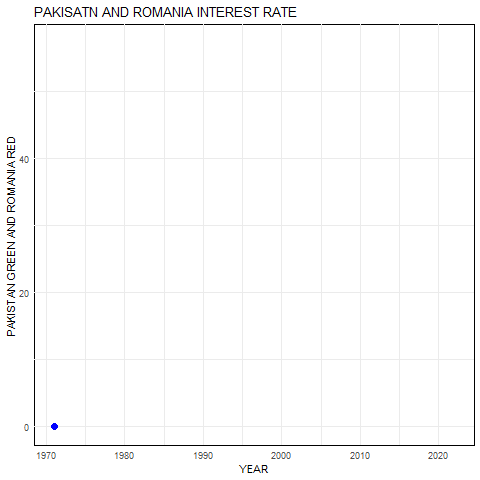
Deposit Interest Rate Refers To The Rate At Which Financial Institutions, Such As Banks, Offer Interest On Deposits Made By Customers.
SIMILARLY PAKISTAN AFTER 2000 DEPOSIT INTEREST RATE RISES BUT ROMANIA DEPOSIT INTEREST RATE IS MUCH MORE FLUCTUATED & INCREASED THAN PAKISTAN.
PAKISTAN VS ROMANIA DEPT :-
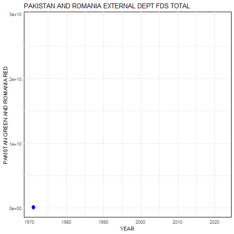
As The External DEPT FDS Total Means External Debt Refers To The Total Amount Of Debt That A Country Owes To Foreign Creditors.
As Romania Take More DEPT As Of Pakistan. Romania DEPT Is Directly Same As Pakistan Till 2002.After That It Increased Very FAST . So Overall Romania External DEPT Is More Than Pakistan .
FOREIGN DIRECT INVESTMENT NET ENFLOWS AND OUTFLOWS:-
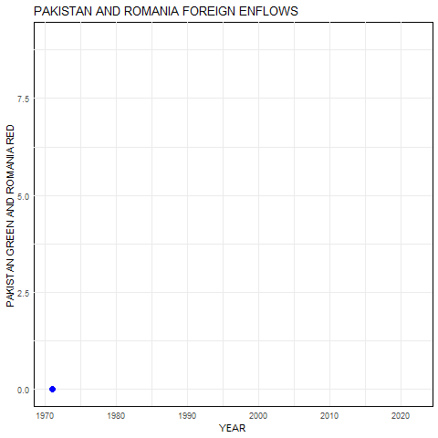
DIRECT ENFLOWSAs There Is No Foreign Investment In Pakistan As In 2010 Foreign Invest But After No Investment Is Made .While In Romania Foreign Investment Increases Very Fastly Due To Development Of Romania .
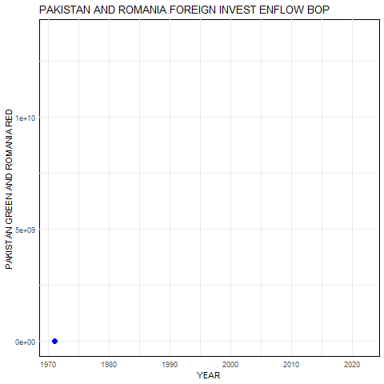
As Pakistan Enflows Is Much More Lower Than Romania Net Enflows Made By Foreigners Pakistan Investment By Foreign Increases In 2005-2010 But After It Get Downfall .On Otherside Romania Investment Foreign Is Increasing Continously , Only Is 2010 Is Downfall.
FOREIGN DIRECT INVESTMENT BOP OUTFLOWS:-
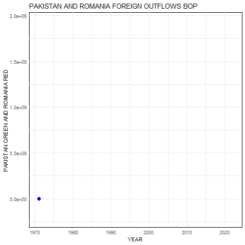
FOREIGN INVESTMENT OUTFLOWS BALANCE OF PAYMENTForeign Investment Outflows Bop Of Pakistan Is Constant .Due To Political Instability.While Romania Foreign Outflows Increasing After 2000 But It Get A Huge Downfall Is 2010. But After 2010 Fluctuation Are Made In Romania Foreign Outflows Bop.
CONCLUSION:-
“In Conclusion, The Comprehensive Analysis Of Data Spanning From 1970 To 2020 Reveals A Noteworthy Trajectory Of Progress In Pakistan’s Economic Landscape. Despite Facing Numerous Challenges, The Nation Has Demonstrated Resilience And Growth. The Graphs And Analyses Presented Depict A Dynamic Picture Of Development. It Is Important To Acknowledge That Progress, Though Evident, Is Accompanied By Hurdles, Some Of Which Are Unique To Pakistan. In This Journey, We Recognize The Ongoing Efforts And Potential For Further Advancement, While Also Acknowledging The Diverse Economic Landscapes And Challenges That Both Pakistan And Romania Navigate.”